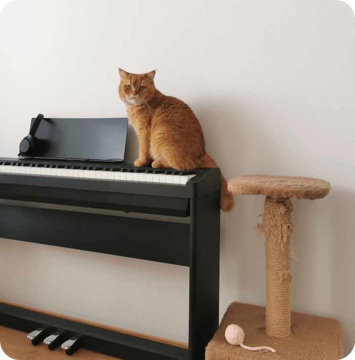

Кто я?
- Дипломированный специалист
- Преподаватель по классу синтезатора, фортепиано, музыкально-теоретических дисциплин
- Автор научных статей и публикаций
- Опыт преподавания в музыкальной школе, среднем и высшем музыкальном учебном заведении
- Выступления с музыкальными коллективами на различных площадках

Образование
- Архангельский музыкальный колледж, квалификация «Преподаватель музыкально-теоретических дисциплин, преподаватель ритмики»
- Петрозаводская государственная консерватория им. Глазунова теоретико-дирижерский факультет, теоретико-композиторское отделение очной формы обучения по программе специалитета. Специальность — музыковедение
- Федеральное государственное бюджетное образовательное учреждение высшего образования «Российский государственный педагогический университет им. А.И. Герцена» (Санкт-Петербург) очной формы обучения по дополнительной профессиональной программе профессиональной переподготовки «Преподавание электронного клавишного синтезатора»
